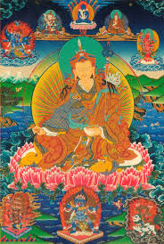

<p><span style="font-size:12px"> Падмасамбхава, в Непале и Тибете он также известен как Гуру Ринпоче, Рожденный из лотоса &mdash; чудесный и очень почитаемый Учитель. В 8-м веке, он принес буддизм в Тибет, и примерно с тех пор его почитают равным Бодхисаттвам. Многими чудесами изобилуют легенды о Падмасамбхаве. Он владел всеми известными сидхами, начиная от простейших левитации и проявления одновременно во множестве мест, кончая неизъяснимыми магическими способностями. Дело в том, что Падмасамбхава реализовал при жизни великое сострадание, отречение, и постиг пустотность ума. Таким образом для него нет разницы между паранормальным и обыденным, различие существует только по преданию. Он был &laquo;чисторожденным&raquo;, то есть появился из цветка лотоса. Известно, что завистники Гуру Ринпоче дважды убивали его, однако же, он неизменно возрождался из большого лотоса, распустившегося посреди кристально-чистого озера. Его божественная супруга йогиня Еше Цогьял, так же высоко почитается в Тибете.</span></p>
